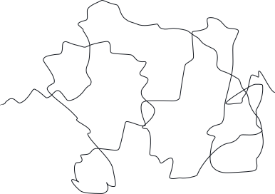
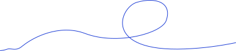
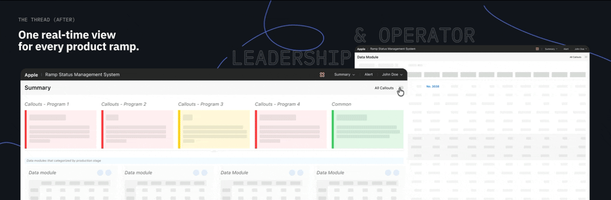
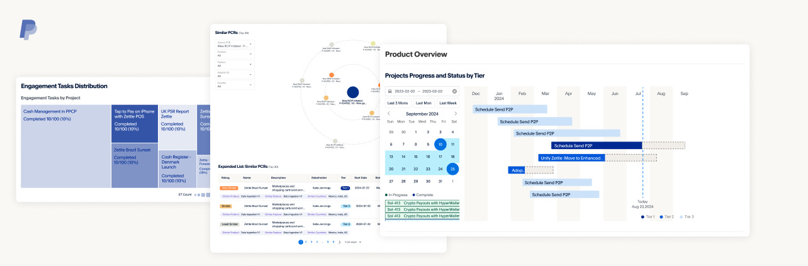
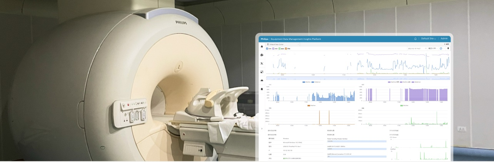
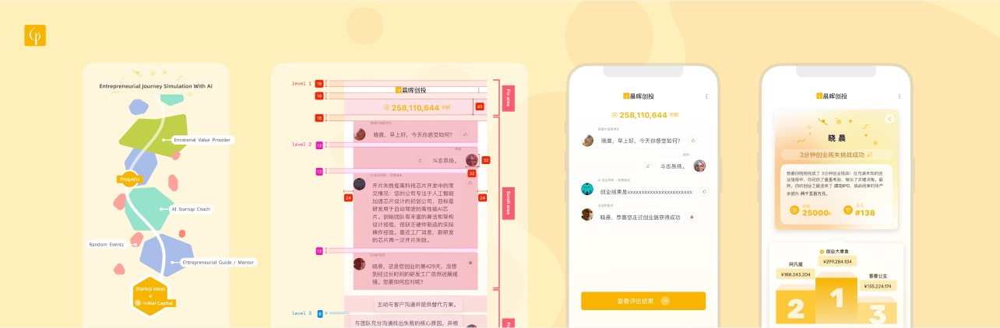
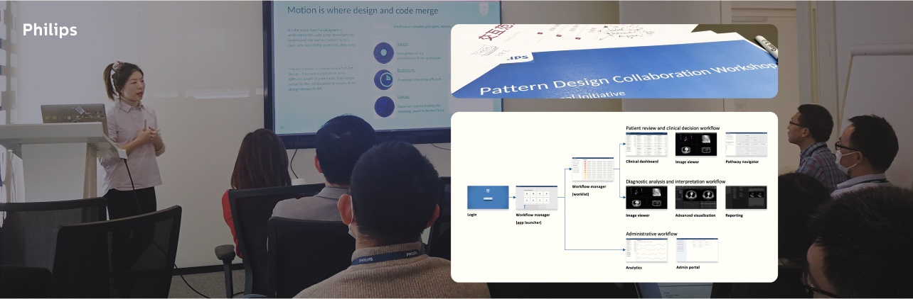

PORTFOLIO 2026
Complex systems, untangled.
I’m Linxi, a senior UX designer specializing in complex systems. I work where business, technology and human needs get tangled — turning messy problems in industry-benchmark supply chains, long-lifecycle medical systems and enterprise fintech into digital experiences that feel trustworthy and natural.
Ramp Health Project
The status quo
Before every Apple launch comes the production ramp — several months in which production scales from pilot runs to full volume. Ramp data existed but lived in separate sources reported as static snapshots. Leaders struggled to see risk alerts in time; operators repeated the reporting by hand. Ramp Health system needed to bring it into one complete, real-time view so each group can focus on managing the ramp instead of chasing the data.

The tangle (Before)
High-Uncertainty
The knot (Problem Definition)

Lack of a shared view of ramp readiness across operators and leaders.
The thread (After)
One real-time view for all products
Leadership sees risk alerts at a glance
Operators flag issues and confirm data in one click
Ramp readiness reports generated within the system

The work & outcomes
Ramp data is now consolidated in one system, and reporting moved from weekly snapshots to minute-level updates. Leaders see live risk alerts across products at a glance; operators update and report their data within the system without rebuilding 100+ page reports by hand. The key design moves: a scan-first summary, data synchronization with minimal manual steps, and a holistic design language across 18 modules.
My Role
Solo → Duet
Led the 0→1 UI/UX design architecture on my own, then scaled the design with a second designer.
Impact
Launched
Wave 1 was adopted by business teams and is used to manage new product ramps this year.
Stakeholder Management
11+ people
Aligned with product managers, department leaders, and development team.
Time Frame
7 Months
The design structure carried over into Wave 2.
Selected Work

Associative Support Risk & Control Portal
The status quo
Building an appropriate compliance strategy requires significant effort involving the search, comparison, combination, and simulation of risks and controls covering various business hierarchies.
The design
Designed the UI/UX of a visually aided associative support compliance strategy platform in collaboration with the engineering team.

Equipment Data Management System for Radiology Department
The status quo
A large volume of medical equipment lacks inventory management, and high-value equipment suffers from data disconnection, thereby increasing the costs around equipment management for department heads.
The design
Delivered a radiology department equipment data management system design that has been deployed in more than 10 hospitals.

Startup Challenge AI-Simulated Game
The status quo
Chenhui Venture Partners aims to boost communication between the company and tech entrepreneurs by offering an entrepreneurial journey challenge game simulated by an AI engine on its official website.
The design
Found the sweet spot for UI/UX between front-end development, data science, venture capital expertise, and brand image.

Interaction Patterns for Large Screen Displays
The status quo
When dealing with large-scale wall-mounted displays intended for monitoring and showcase, existing web-based and mobile-based standard design systems are no longer applicable.
The design
Developed design patterns for large-screen dashboards used in healthcare system management and applied them to real projects. Defined six common task types in medical software during the project.
Also Worked On
Medical Informatics Designed for Hospitals in China
The design
Designed multiple medical systems from 0 to 1 and through later versions, including clinical report management, ultrasound region-of-interest drawing software and maintenance appointment scheduling.
Human-Machine Interface Design on Consumer-Facing Products
The design
Designed user interfaces for self-service radiology report kiosks, as well as interactive interfaces for mass-produced air purifiers and kitchen appliances.
Consumer-Facing Apps and Mini-Programs
The design
Designed user interfaces for multiple consumer-facing applications based on user needs.
How I work
STEP 01
Design with curiosity
I design with curiosity about the business. On Apple’s supply chain project, I earned a supply chain professional certification and sat with PMs to learn which data and steps matter.
STEP 02
Find the knot
Complex systems involve many owners. I separate what I decide from what needs confirming, and bring stakeholders in early. Using draft sketches, we define the problem and clarify the requirements together.
STEP 03
Lay the thread
I visualize each design proposal and update, and gather continuous feedback from the relevant parties — ultimately striking a balance that meets the diverse needs of every stakeholder.
STEP 04
Keep it running
I make sure the design grows with the business, not in isolation. After I left the Ramp Health project, its design structure and component rules remained in use.
Awards & Patent
Red Dot: Best of the Best · iF
Philips NightOwl Baby Monitor
Connected IoT application UI/UX design
Red Dot · iF
Philips Air Purifier Formaldehyde Fighter Series
LED display UI/UX design on the air purifier
Red Dot · iF
Philips Health Rice Cooker Series
LED and tangible interface UI/UX design for two rice cooker types
Dutch Design Week Exhibition
Affordable healthcare solution for malaria diagnosis in rural Uganda, traveled to Uganda for a two-week research trip
Graphic User Interface Design Patent
Medical System Event Timeline Design
Responsible for the UI/UX Design
Red Dot Best Design Team
Red Dot Best Design Team Award, Philips
Part of the award-winning design team for five years